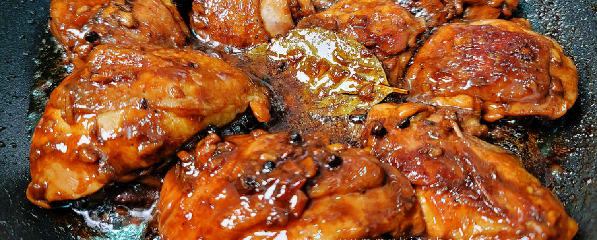
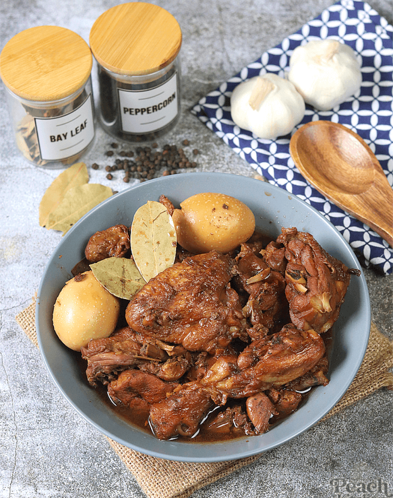
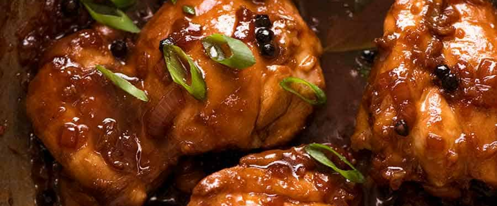
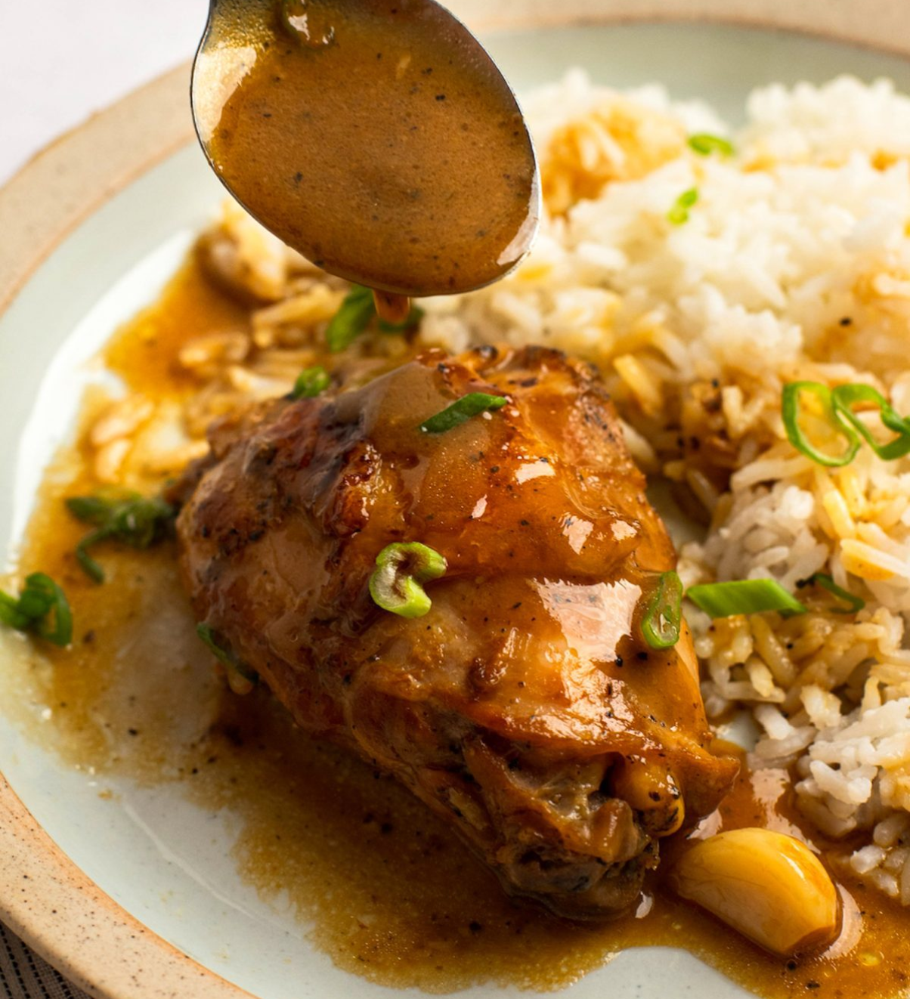

The savory, umami combination of soy sauce, vinegar, and garlic
breathes life into the classic dish we know as adobo. Who doesn’t love
deliciously tender chunks of chicken that soak up an incredibly
dynamic sauce? With easy, go-to components like eggs, peppercorn,
vinegar, soy sauce and bay leaves, among others, it comes as no
surprise that chicken adobo is a no fail meal in many Filipino homes.
We love this dish for its vibrant flavors and addictive aroma; that
go-to mix of salty and sweet can do no wrong! As such, there’s a
reason why this perfect chicken adobo is heralded as a national dish!
Home




Chicken Adobo